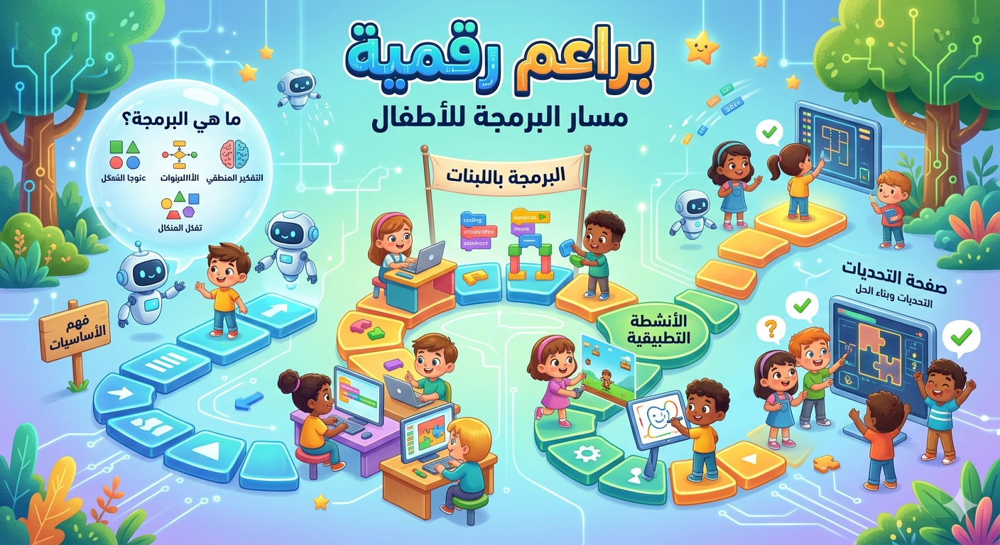

مفاهيم البرمجة
شرح مبسط للأطفال حول الأوامر، والتسلسل، والتكرار، والشرط، والخوارزمية، مع صور بصرية وأمثلة سهلة الفهم.
فتح الصفحةمسار البرمجة للأطفال
تم تنظيم مسار البرمجة داخل منصة براعم رقمية على صفحات متعددة حتى ينتقل الطفل بين المفاهيم الأساسية، والبرمجة باللبنات، والأنشطة التطبيقية، والتحديات بصورة واضحة ومريحة. هذا التنظيم يساعد على التركيز في كل فكرة على حدة، ويجعل التجربة التعليمية أقرب إلى المنصات الحديثة المخصصة للأطفال.
يبدأ الطالب بالتعرف على معنى البرمجة وكيف يفكر الحاسوب، ثم يرى شكل اللبنات البرمجية ووظيفتها، وبعد ذلك ينتقل إلى البرامج التطبيقية التي يمكن تشغيلها والتفاعل معها مباشرة. وفي النهاية يصل إلى صفحة التحديات التي تشجعه على ترتيب الأوامر، والتصحيح، وبناء الحل خطوة بعد خطوة.

شرح مبسط للأطفال حول الأوامر، والتسلسل، والتكرار، والشرط، والخوارزمية، مع صور بصرية وأمثلة سهلة الفهم.
فتح الصفحةعرض لفكرة اللبنات البرمجية وكيفية بناء برنامج من خلال لبنات الأحداث، والحركة، والتكرار، والشروط.
فتح الصفحةمجموعة برامج تفاعلية متعددة يمكن للطالب تجربتها مباشرة لاكتشاف أثر الأوامر وطريقة عملها.
فتح الصفحةأنشطة قصيرة لتنمية التفكير البرمجي مثل ترتيب اللبنات، وإصلاح الخطأ، والوصول إلى الهدف.
فتح الصفحةبطاقات وصور داخل صفحات المسار تساعد الطفل على الربط بين الفكرة والشكل والنتيجة بطريقة ممتعة.
مشاهدة الصورتم توزيع المحتوى على صفحات مستقلة بدل جمعه في صفحة واحدة، حتى تكون تجربة التصفح أسهل وأكثر تنظيمًا.
أنت هنا الآن